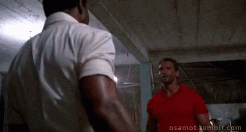

<!DOCTYPE html>
<html lang="en">
  <head>
    <meta charset="utf-8" />
    <meta name="viewport" content="width=device-width, initial-scale=1.0, maximum-scale=1.0, user-scalable=no" />

    <title></title>
    <link rel="stylesheet" href="dist/reveal.css" />
    <link rel="stylesheet" href="dist/theme/black.css" id="theme" />
    <link rel="stylesheet" href="plugin/highlight/zenburn.css" />
	<link rel="stylesheet" href="css/layout.css" />
	<link rel="stylesheet" href="plugin/customcontrols/style.css">
	<link rel="stylesheet" href="plugin/chalkboard/style.css">

	<link rel="stylesheet" href="plugin/reveal-pointer/pointer.css" />


    <script defer src="dist/fontawesome/all.min.js"></script>

	<script type="text/javascript">
		var forgetPop = true;
		function onPopState(event) {
			if(forgetPop){
				forgetPop = false;
			} else {
				parent.postMessage(event.target.location.href, "app://obsidian.md");
			}
        }
		window.onpopstate = onPopState;
		window.onmessage = event => {
			if(event.data == "reload"){
				window.document.location.reload();
			}
			forgetPop = true;
		}

		function fitElements(){
			const itemsToFit = document.getElementsByClassName('fitText');
			for (const item in itemsToFit) {
				if (Object.hasOwnProperty.call(itemsToFit, item)) {
					var element = itemsToFit[item];
					fitElement(element,1, 1000);
					element.classList.remove('fitText');
				}
			}
		}

		function fitElement(element, start, end){

			let size = (end + start) / 2;
			element.style.fontSize = `${size}px`;

			if(Math.abs(start - end) < 1){
				while(element.scrollHeight > element.offsetHeight){
					size--;
					element.style.fontSize = `${size}px`;
				}
				return;
			}

			if(element.scrollHeight > element.offsetHeight){
				fitElement(element, start, size);
			} else {
				fitElement(element, size, end);
			}		
		}


		document.onreadystatechange = () => {
			fitElements();
			if (document.readyState === 'complete') {
				if (window.location.href.indexOf("?export") != -1){
					parent.postMessage(event.target.location.href, "app://obsidian.md");
				}
				if (window.location.href.indexOf("print-pdf") != -1){
					let stateCheck = setInterval(() => {
						clearInterval(stateCheck);
						window.print();
					}, 250);
				}
			}
	};


        </script>
  </head>
  <body>
    <div class="reveal">
      <div class="slides"><section  data-markdown><script type="text/template"><!-- .slide: class="has-light-background drop" data-background-color="white" -->
<div class="" style="position: absolute; left: 0px; top: 0px; height: 700px; width: 960px; min-height: 700px; display: flex; flex-direction: column; align-items: center; justify-content: center" absolute="true">


##  Süvaõppe lahendused Maa- ja Ruumiametis

### Andres Kasekamp

### 08.05.2025
</div></script></section><section  data-markdown><script type="text/template"><!-- .slide: class="drop" -->
<div class="" style="position: absolute; left: 0px; top: 0px; height: 700px; width: 960px; min-height: 700px; display: flex; flex-direction: column; align-items: center; justify-content: center" absolute="true">

## Deep Learning Packages (dlpk)

- Eelnevalt treenitud [süvaõppe mudelid](https://www.esri.com/en-us/arcgis/deep-learning-models) Living Atlasest
- &shy;<!-- .element: class="fragment" data-fragment-index="1" -->Saab kasutada ortofotode ja punktipilve peal
- &shy;<!-- .element: class="fragment" data-fragment-index="2" -->ArcGIS Pro uuendamisega on vaja *[installeriga](https://github.com/Esri/deep-learning-frameworks)* teegid ka uuendada
</div></script></section><section ><section data-markdown><script type="text/template"><!-- .slide: class="drop" -->
<div class="" style="position: absolute; left: 0px; top: 0px; height: 700px; width: 960px; min-height: 700px; display: flex; flex-direction: column; align-items: center; justify-content: center" absolute="true">

## Päikesepargid

- [Solar Panel Detection - USA](https://www.arcgis.com/home/item.html?id=c2508d72f2614104bfcfd5ccf1429284)
- &shy;<!-- .element: class="fragment" data-fragment-index="1" -->Peenhäälestamine (*fine-tuning*)
- &shy;<!-- .element: class="fragment" data-fragment-index="2" -->Eel- ja järeltöötlus `arcpy`-ga
- &shy;<!-- .element: class="fragment" data-fragment-index="3" -->Neljandik Eestist iga aasta ETAK andmekvaliteedi parandamiseks
	- `E_302_ou_a (kasutus = 50)`
</div></script></section><section data-markdown><script type="text/template"><!-- .slide: class="drop" -->
<div class="" style="position: absolute; left: 0px; top: 0px; height: 700px; width: 960px; min-height: 700px; display: flex; flex-direction: column; align-items: center; justify-content: center" absolute="true">


</div></script></section></section><section  data-markdown><script type="text/template"><!-- .slide: class="drop" -->
<div class="" style="position: absolute; left: 0px; top: 0px; height: 700px; width: 960px; min-height: 700px; display: flex; flex-direction: column; align-items: center; justify-content: center" absolute="true">

<div class="" style="position: absolute; left: 0%; top: 0%; height: 100%; width: 50%; display: flex; flex-direction: column; align-items: center; justify-content: center" >

## Üksikpuude tuvastamine
- [Tree Segmentation](https://www.arcgis.com/home/item.html?id=6d910b29ff38406986da0abf1ce50836) ja [Tree Point Classification](https://maaamet.maps.arcgis.com/home/item.html?id=58d77b24469d4f30b5f68973deb65599) mudelid kvaliteedikontrolliks
- Töötlus `lidr` ja `arcpy`-ga
- [Geoportaalis](https://geoportaal.maaamet.ee/est/ruumiandmed/geo3d/laadi-3d-andmed-alla-p833.html#lod0-puud-pane) puuvõra ja tsentroidi andmed
</div>

<div class="" style="position: absolute; left: 50%; top: 0%; height: 100%; width: 50%; display: flex; flex-direction: column; align-items: center; justify-content: center" >


</div>
</div></script></section><section  data-markdown><script type="text/template"><!-- .slide: class="drop" -->
<div class="" style="position: absolute; left: 0px; top: 0px; height: 700px; width: 960px; min-height: 700px; display: flex; flex-direction: column; align-items: center; justify-content: center" absolute="true">

## Muud mudelid

- [Building Footprint Extraction - USA](https://www.arcgis.com/home/item.html?id=a6857359a1cd44839781a4f113cd5934)
- [Road Extraction - North America](https://maaamet.maps.arcgis.com/home/item.html?id=0c00be3c7e4042ebadd3ae1404190a5b)
- [Text SAM](https://maaamet.maps.arcgis.com/home/item.html?id=8df3bf4167bc4c7b967f677f8b362ec3)
</div></script></section><section  data-markdown><script type="text/template"><!-- .slide: class="drop" -->
<div class="" style="position: absolute; left: 0px; top: 0px; height: 700px; width: 960px; min-height: 700px; display: flex; flex-direction: column; align-items: center; justify-content: center" absolute="true">

# Visioon
<video autoplay muted loop playsinline width="1000" height="500"><source src="A/3594200529-preview.mp4" type="video/mp4"></video>
</div>

<aside class="notes"><p><a href="https://www.shutterstock.com/video/clip-3594200529-side-view-diversegroup-people-gathering-around-cyborg">https://www.shutterstock.com/video/clip-3594200529-side-view-diversegroup-people-gathering-around-cyborg</a></p>
</aside></script></section><section ><section data-markdown><script type="text/template"><!-- .slide: class="drop" -->
<div class="" style="position: absolute; left: 0px; top: 0px; height: 700px; width: 960px; min-height: 700px; display: flex; flex-direction: column; align-items: center; justify-content: center" absolute="true">

# Andmed MaRu-s

- 58 kaardirakendust [Geoportaalis](https://geoportaal.maaamet.ee/est/kaardirakendused-p2.html)
- 335 andmekogumit, teenust ja kaarti [Ruumiandmete kataloogis](https://metadata.geoportaal.ee/geonetwork/srv/est/catalog.search#/home) 
-  ∞ objekti
</div></script></section><section data-markdown><script type="text/template"><!-- .slide: class="drop" -->
<div class="" style="position: absolute; left: 0px; top: 0px; height: 700px; width: 960px; min-height: 700px; display: flex; flex-direction: column; align-items: center; justify-content: center" absolute="true">

## Generatiivne AI

- Loomuliku teksti tõlkimine
- Erinevad keerukuse tasandid
	- kaardirakenduse või õpitoa materjali leidmine 🕵
	- *state* muutmine X-GISis 🔀
	- millegi uue genereerimine 😵‍💫
</div></script></section><section data-markdown><script type="text/template"><!-- .slide: class="drop" -->
<div class="" style="position: absolute; left: 0px; top: 0px; height: 700px; width: 960px; min-height: 700px; display: flex; flex-direction: column; align-items: center; justify-content: center" absolute="true">


</div></script></section><section data-markdown><script type="text/template"><!-- .slide: class="drop" -->
<div class="" style="position: absolute; left: 0px; top: 0px; height: 700px; width: 960px; min-height: 700px; display: flex; flex-direction: column; align-items: center; justify-content: center" absolute="true">

Tulemus: [üleujutusalade kaardirakendus](https://geoportaal.maaamet.ee/est/kaardirakendused/uleujutusohuga-alad/uleujutusohuga-alade-kaardirakenduse-kirjeldus-p467.html) Haapsalu linnas koos katastriüksustega ja üleujutusalade riskipiirkonnaga

<video autoplay muted loop playsinline width="1000" height="500"><source src="A/ezgif-3e931a0f32ceb3.mp4" type="video/mp4"></video>
</div></script></section></section><section ><section data-markdown><script type="text/template"><!-- .slide: class="drop" -->
<div class="" style="position: absolute; left: 0px; top: 0px; height: 700px; width: 960px; min-height: 700px; display: flex; flex-direction: column; align-items: center; justify-content: center" absolute="true">

🌍 ArcGIS 🤝 LLM 🦙


</div></script></section><section data-markdown><script type="text/template"><!-- .slide: class="drop" -->
<div class="" style="position: absolute; left: 0px; top: 0px; height: 700px; width: 960px; min-height: 700px; display: flex; flex-direction: column; align-items: center; justify-content: center" absolute="true">

## Tehnoloogia 🤖

- [ollama](https://ollama.com/) + RAG
- [Docker Model Runner](https://docs.docker.com/model-runner/)
- [MCP protokoll](https://modelcontextprotocol.io/introduction)
- [ArcGIS Pro AI Assistant (Beta)](https://www.esri.com/content/dam/esrisites/en-us/media/products/arcgis-pro-issues-addressed/ai-assistant-pro.pdf)
- &shy;<!-- .element: class="fragment" data-fragment-index="1" -->`arcpy` ja `R` võimekuse kasutamine
- &shy;<!-- .element: class="fragment" data-fragment-index="2" -->Eesti keele arendused
	- [TartuNLP Llammas](https://huggingface.co/tartuNLP)
	- [TalTech keeletehnnoloogia labor](https://taltech.ee/tarkvarateaduse-instituut/koostoo/keeletehnoloogia-laboratoorium)
</div></script></section><section data-markdown><script type="text/template"><!-- .slide: class="drop" -->
<div class="" style="position: absolute; left: 0px; top: 0px; height: 700px; width: 960px; min-height: 700px; display: flex; flex-direction: column; align-items: center; justify-content: center" absolute="true">

Keerulised küsimused 🤔

> Eemalda Hiiumaal CHM-st 2-meetrise puhvriga elektriliinid
</div></script></section><section data-markdown><script type="text/template"><!-- .slide: class="drop" -->
<div class="" style="position: absolute; left: 0px; top: 0px; height: 700px; width: 960px; min-height: 700px; display: flex; flex-direction: column; align-items: center; justify-content: center" absolute="true">


</div></script></section><section data-markdown><script type="text/template"><!-- .slide: class="drop" -->
<div class="" style="position: absolute; left: 0px; top: 0px; height: 700px; width: 960px; min-height: 700px; display: flex; flex-direction: column; align-items: center; justify-content: center" absolute="true">


</div></script></section></section><section  data-markdown><script type="text/template"><!-- .slide: class="has-light-background drop" data-background-color="white" -->
<div class="" style="position: absolute; left: 0px; top: 0px; height: 700px; width: 960px; min-height: 700px; display: flex; flex-direction: column; align-items: center; justify-content: center" absolute="true">


# Aitäh!

**Andres Kasekamp** \
📧 Andres.Kasekamp@maaruum.ee \
👨‍💻 [MaRu koodivaramu](https://koodivaramu.eesti.ee/maa-ja-ruumiamet/)
</div></script></section></div>
    </div>

    <script src="dist/reveal.js"></script>

    <script src="plugin/markdown/markdown.js"></script>
    <script src="plugin/highlight/highlight.js"></script>
    <script src="plugin/zoom/zoom.js"></script>
    <script src="plugin/notes/notes.js"></script>
    <script src="plugin/math/math.js"></script>
	<script src="plugin/mermaid/mermaid.js"></script>
	<script src="plugin/chart/chart.min.js"></script>
	<script src="plugin/chart/plugin.js"></script>
	<script src="plugin/menu/menu.js"></script>
	<script src="plugin/customcontrols/plugin.js"></script>
	<script src="plugin/chalkboard/plugin.js"></script>
	<script src="plugin/reveal-pointer/pointer.js"></script>

    <script>
      function extend() {
        var target = {};
        for (var i = 0; i < arguments.length; i++) {
          var source = arguments[i];
          for (var key in source) {
            if (source.hasOwnProperty(key)) {
              target[key] = source[key];
            }
          }
        }
        return target;
      }

	  function isLight(color) {
		let hex = color.replace('#', '');

		// convert #fff => #ffffff
		if(hex.length == 3){
			hex = `${hex[0]}${hex[0]}${hex[1]}${hex[1]}${hex[2]}${hex[2]}`;
		}

		const c_r = parseInt(hex.substr(0, 2), 16);
		const c_g = parseInt(hex.substr(2, 2), 16);
		const c_b = parseInt(hex.substr(4, 2), 16);
		const brightness = ((c_r * 299) + (c_g * 587) + (c_b * 114)) / 1000;
		return brightness > 155;
	}

	var bgColor = getComputedStyle(document.documentElement).getPropertyValue('--r-background-color').trim();
	var isLight = isLight(bgColor);

	if(isLight){
		document.body.classList.add('has-light-background');
	} else {
		document.body.classList.add('has-dark-background');
	}

      // default options to init reveal.js
      var defaultOptions = {
        controls: true,
        progress: true,
        history: true,
        center: true,
        transition: 'default', // none/fade/slide/convex/concave/zoom
        plugins: [
          RevealMarkdown,
          RevealHighlight,
          RevealZoom,
          RevealNotes,
          RevealMath.MathJax3,
		  RevealMermaid,
		  RevealChart,
		  RevealCustomControls,
		  RevealMenu,
	      RevealPointer,
		  RevealChalkboard, 
        ],


    	allottedTime: 120 * 1000,

		mathjax3: {
			mathjax: 'plugin/math/mathjax/tex-mml-chtml.js',
		},
		markdown: {
		  gfm: true,
		  mangle: true,
		  pedantic: false,
		  smartLists: false,
		  smartypants: false,
		},

		mermaid: {
			theme: isLight ? 'default' : 'dark',
		},

		customcontrols: {
			controls: [
				{id: 'toggle-overview',
				title: 'Toggle overview (O)',
				icon: '<i class="fa fa-th"></i>',
				action: 'Reveal.toggleOverview();'
				},
				{ icon: '<i class="fa fa-pen-square"></i>',
				title: 'Toggle chalkboard (B)',
				action: 'RevealChalkboard.toggleChalkboard();'
				},
				{ icon: '<i class="fa fa-pen"></i>',
				title: 'Toggle notes canvas (C)',
				action: 'RevealChalkboard.toggleNotesCanvas();'
				},
			]
		},
		menu: {
			loadIcons: false
		}
      };

      // options from URL query string
      var queryOptions = Reveal().getQueryHash() || {};

      var options = extend(defaultOptions, {"width":960,"height":700,"margin":0.04,"controls":true,"progress":true,"slideNumber":true,"transition":"slide","transitionSpeed":"default"}, queryOptions);
    </script>

    <script>
      Reveal.initialize(options);
    </script>
  </body>

  <!-- created with Advanced Slides -->
</html>
